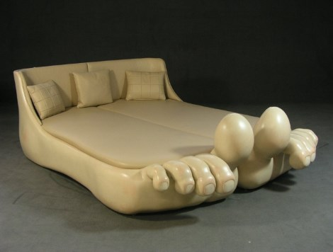

Лимитированная кровать "Pedus" в стиле поп-дизайна
От провокационного немецкого дизайнера Frank Oelke. Лимитированная коллекция. Всего было сделано 14 штук.

Человек становится взрослым, когда поймет, что лучшая мягкая игрушка — это диван.
Подробное описание товара
Кровать относится к стилю анти-дизайна или поп-дизайна.
Интерьерный поп-дизайн, зародившийся в 60-х годах прошлого века в Америке в эпоху массового потребления характерен смешением самых невероятных и разнообразных форм, цветов, материалов и элементов. Дизайн интерьера в стиле Поп иногда экстравагантный, иногда вызывающий, но точно не оставляющий равнодушным.
Дизайнер Frank Oelke родился в Дрездене в 1943 году. После короткой остановки в Америке в конце 60-х он вернулся в Германию навсегда.
Кровать 'Pedus' выглядит как две ноги с приподнятыми большими пальцами. В оригинальной конструкции кровать не просто была окрашена, а позолочена по периметру.
Характеристики товара
| Период | Стиль | Каркас | Ножки | Длина, см | Ширина, см | Высота изголовья, см | Высота пальцев, см | Страна | Год создания |
|---|---|---|---|---|---|---|---|---|---|
| 2-я половина XX века | Поп-дизайн | дерево | нержавеющая сталь | 230 | 175 | 79 | 68 | Германия | 1969 |
Оставьте контактные данные, чтобы мы смогли с Вами связаться и обсудить условия покупки либо просмотра предмета.
© Все права защены